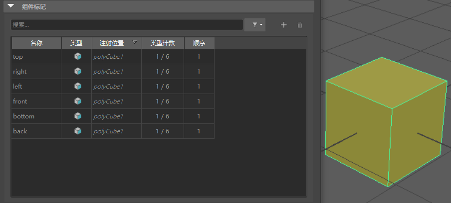

可使用组件标记创建成员身份标记以替换 groupID 节点（在使几何体变形时通常会生成这种节点）。“组件标记”(Component Tags)可创建与拓扑无关的程序工作流以便您在工作时进行编辑，以及通过消除不必要的节点在节点编辑器(Node Editor)中进行整理。
由于使用“组件标记”(Component Tags)可以命名和分离出几何体中选择的组件，因此可以使用它执行以下操作：
- 仅将变形器应用于几何体的特定区域，并创建可编辑的衰减效果。请参见使用组件标记创建变形器衰减
- 自动创建提供给组件列表的查找表。请参见使用 componentMatch 节点创建顶点查找表
注： 如果建模面、顶点或边要创建多个具有相同名称的组件标记，请使用组件标记表过滤器  菜单中的“仅最终”(Final Only)选项，以仅显示最新标记。默认情况下，此选项处于活动状态，并且只有最后创建的标记显示在组件标记表中。
菜单中的“仅最终”(Final Only)选项，以仅显示最新标记。默认情况下，此选项处于活动状态，并且只有最后创建的标记显示在组件标记表中。
菜单中的“仅最终”(Final Only)选项，以仅显示最新标记。默认情况下，此选项处于活动状态，并且只有最后创建的标记显示在组件标记表中。
- 添加组件标记
-
- 在要添加组件标记的多边形上选择几何体：面、顶点或边。（若要选择几何体上的组件，请按 F8 键进入组件模式，然后按住 Shift 键或 Ctrl 键并选择组件。）
- 在属性编辑器(Attribute Editor)中，单击几何体的形状节点选项卡并展开“组件标记”(Component Tags)部分。（此部分中的设置在组件标记表中进行介绍。）
- 单击表右侧的“添加”(Add)图标
 以创建 unnamedTag 条目。
以创建 unnamedTag 条目。
- 在新的 unnamedTag 上单击鼠标右键，然后选择“组件 > 替换”(Components > Replace)以使用选定组件填充标记。
注： 不能在同一组件标记选择中组合不同的组件类型，例如面和边。
- 在表中的 unnamedTag 组件标记上单击鼠标右键，然后选择“组件 > 重命名”(Components > Rename)。此时将显示一个窗口，以便输入组件标记的名称。
- 单击“确定”(OK)。
- 删除或重命名组件标记
- 在“属性编辑器”(Attribute Editor)中，单击几何体形状节点并展开“组件标记”(Component Tags)部分以查看组件标记表。
- 在表中的对应行上单击鼠标右键，然后选择“删除”(Delete)或“重命名”(Rename)。若要编辑组件标记的成员身份，请参见下面的“添加”(Add)/“移除”(Remove)步骤。
-
注： 默认情况下，组件标记包含在某些基本体中。如果不希望应用这些标记，请转到属性编辑器(Attribute Editor)中的基本体选项卡（例如，Cube1），并禁用“创建组件标记”(Component Tag Create)选项。
polyCube1 的默认组件标记。
- 从组件标记成员身份添加/移除元素
- 在“属性编辑器”(Attribute Editor)的“组件标记”(Component Tags)部分中，在表中的组件标记条目上单击鼠标右键，然后选择以下功能：
选项 功能 替换(Replace) 使用选定组件填充组件标记成员身份。 注： 在一个组件标记中只能添加/移除同一组件类型。例如，不能将边添加到面的组件标记选择中。添加(Add)/移除(Remove) 按选定组件增加或减少组件标记成员身份。 合并(Merge) 从多个选定标记创建新的组件标记。 注： 不能在同一组件标记选择中组合不同的组件类型，例如面和边。复制(Duplicate) 复制选定的组件标记。 清除(Clear) 清空组件标记成员身份。这样，可以擦除某个组件标记的所有现有指定，但保留名称以便可以重用。 转化标记组件(Convert Tag Components) 将选定组件类型更改为边、面或顶点。